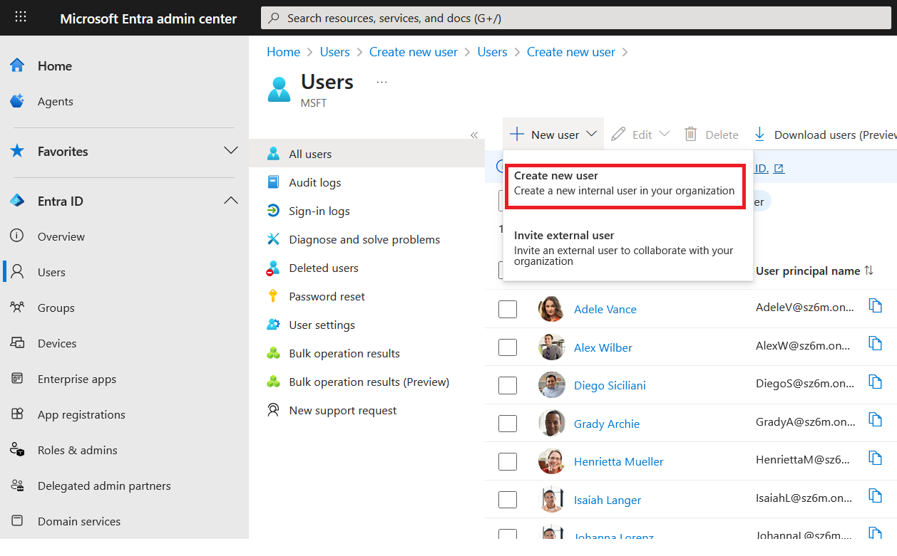
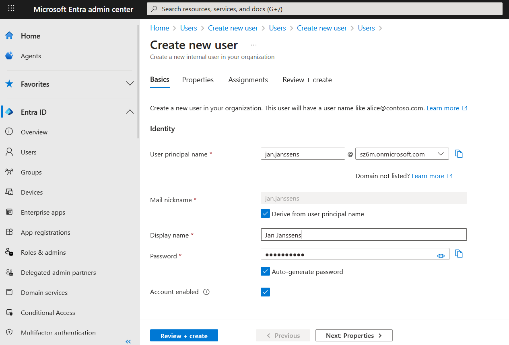
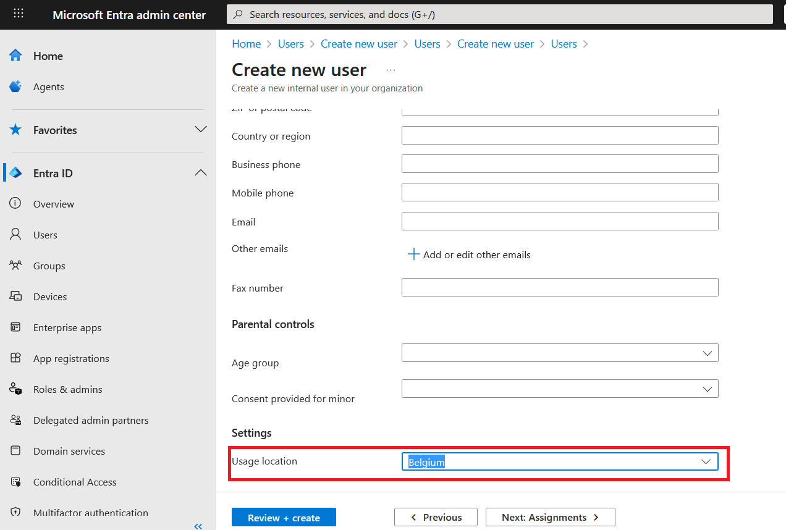
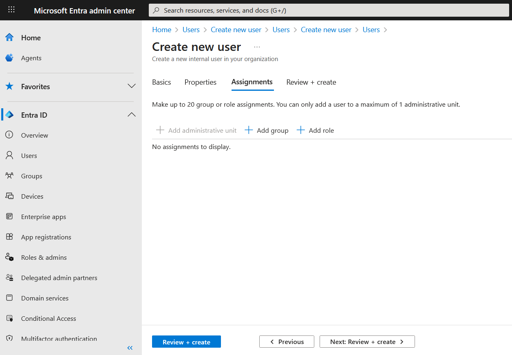
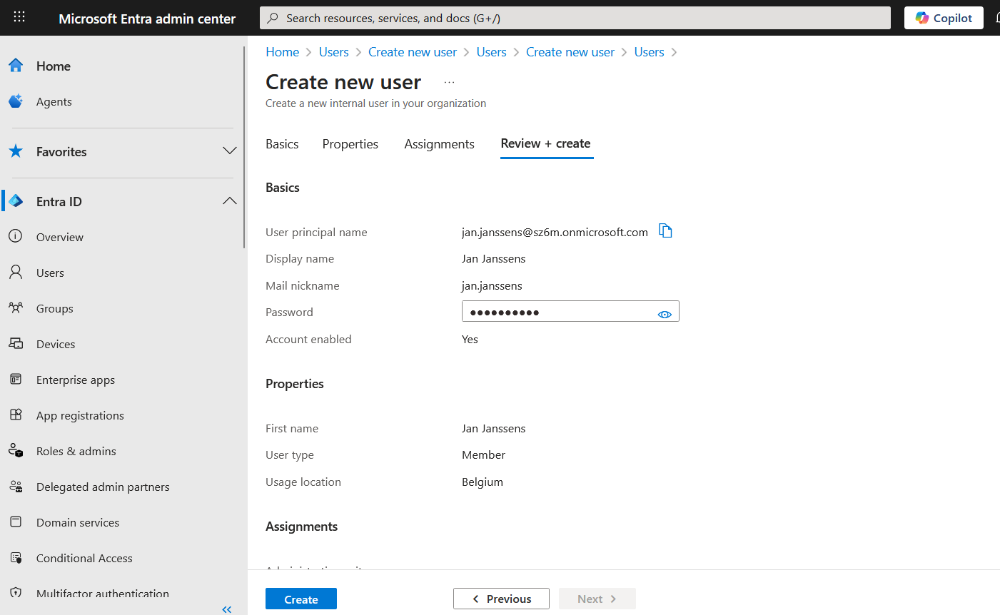
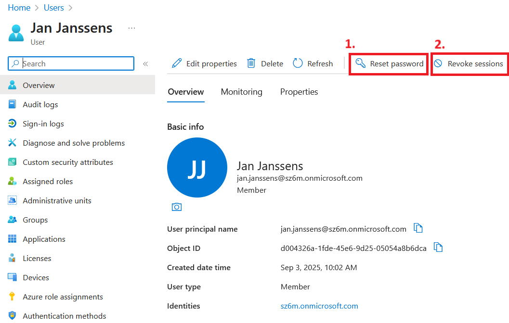

Entra-gebruikers
1. Taal wijzigen
Standaard is Entra ID in het Nederlands geconfigureerd. Omdat de meeste technische documentatie in het Engels is, volg je deze stappen om over te schakelen naar het Engels:
- Ga naar https://entra.microsoft.com en zorg dat je aangemeld bent met je Visual Studio Pro-aanmeldgegevens (niet met je PXL-e-mailgegevens).
- Klik rechtsboven in het scherm op het tandwielicoon.
- Selecteer "Taal en regio" in het menu en kies dan English als voorkeurstaal.
- Kies Nederlands (België) als regionale notatie.
- Klik op "Toepassen" en daarna op "OK" om te bevestigen. De interface wordt nu in het Engels weergegeven.
Het is noodzakelijk dat we de regionale notatie correct instellen op de regio waarin we leven, zodat alle tijdstempels, bijvoorbeeld in logboeken, overeenkomstig je regio worden weergegeven.
2. Nieuwe gebruiker
2.1. Gebruikerstypes
Wanneer je een Entra ID-gebruiker aanmaakt, kies je het gebruikerstype op basis van de relatie van de gebruiker met je organisatie:
- Standard (Member) user: een interne gebruiker die tot je organisatie behoort. Hun account wordt beheerd door je tenant en er kunnen licenties, groepen en rollen aan toegewezen worden.
- Guest user: een externe gebruiker, zoals een partner of contractor, die uitgenodigd wordt om samen te werken in je organisatie. Gasten hebben standaard beperkte toegang en melden zich normaal aan met hun bestaande identiteit.
2.2. Gebruiker toevoegen
- Ga in het menu naar Users en klik op "New User"

-
Kies het type gebruiker (Standard of Guest)
-
Vul de basisgegevens van de gebruiker in
-
Klik op "Next: Properties >"

- Vul op het tabblad Properties de gedetailleerde gegevens van de gebruiker in: First name, Last name, Job Title, ...
- Het veld Usage Location is belangrijk, omdat het de geconfigureerde tijdzone voor die gebruiker bepaalt. Stel dit in op Belgium.
- Klik op "Next: Assignments" om verder te gaan.

- In deze stap kan je de gebruiker aan een groep of rol toewijzen. Dat slaan we voorlopig over.
- Klik op "Next: Review + create"

- Je krijgt een overzicht van de aanmeldgegevens van de gebruiker. Je kan deze gegevens doorgeven aan de nieuwe medewerker.
- Klik op "Create" om de gebruiker aan te maken

2.3. Licentie toewijzen
Als de gebruiker Jan Janssens met deze aanmeldgegevens zou aanmelden op https://m365.cloud.microsoft, zou hij nergens toegang toe hebben. Voordat de gebruiker e-mail kan controleren of andere diensten kan gebruiken, moet er een licentie worden toegewezen.
Er zijn twee manieren om een licentie toe te wijzen:
- Wijs de licentie rechtstreeks toe aan de gebruiker.
- Wijs de licentie toe aan een groep en voeg de gebruiker toe aan die groep. De gebruiker krijgt de licentie dan automatisch toegewezen op basis van die groep.
Het is niet mogelijk om in Entra zelf een licentie aan een gebruiker toe te wijzen; hiervoor moet je het Microsoft admin center gebruiken:
- Navigeer naar https://admin.microsoft.com
- Ga naar "Users" - "Active users"
- Zoek de gebruiker op
- Selecteer de gebruiker
- Ga naar "Licenses and apps"
- Selecteer de gepaste licentie en klik op Save changes
2.4. Gebruiker aanmelden
Normaal gezien kan je niet met meerdere Microsoft 365-accounts aanmelden in hetzelfde browservenster. Door een privévenster te gebruiken, kan je echter in elke privésessie met een ander Microsoft 365-account aanmelden.
- Open een nieuw privé-/incognitovenster in je browser.
- Ga naar https://m365.cloud.microsoft.
- Als er al een andere gebruiker is aangemeld, meld die dan eerst af en kies daarna "Switch to another account".
- Meld aan met de aanmeldgegevens die je eerder hebt aangemaakt.
- De eerste keer dat een gebruiker aanmeldt, wordt gevraagd om een nieuw wachtwoord in te stellen en multi-factor authentication (MFA) te configureren.
3. Veelgebruikte gebruikersacties
3.1. Wachtwoord resetten
- Reset Password: in Entra ID kan je het wachtwoord van een gebruiker resetten. De volgende keer dat de gebruiker aanmeldt, wordt gevraagd om een nieuw wachtwoord aan te maken.
- Revoke Sessions: je kan het resetten van het wachtwoord combineren met het intrekken van sessies. Daardoor wordt de gebruiker afgemeld in alle browsers en applicaties en moet hij zich opnieuw authenticeren.

3.2. MFA opnieuw configureren
De meeste gebruikers gebruiken hun smartphone voor Multi-Factor Authentication (MFA). Als een gebruiker zijn smartphone verliest, die gestolen wordt of per ongeluk gereset wordt, kan hij de MFA bij het aanmelden niet voltooien.
Zo verwijder je de MFA-methode van een gebruiker:
- Navigeer naar de gebruiker van wie je de MFA wil verwijderen.
- Klik in het linkermenu op Authentication methods.
- Klik op de drie puntjes naast de MFA-methode en selecteer Delete.
- Klik op "Yes" om te bevestigen.
3.3. Gebruiker uitschakelen
Je kan voorkomen dat een gebruiker kan aanmelden bij Microsoft 365 en de bijbehorende applicaties zonder zijn account te verwijderen, door de gebruiker uit te schakelen.
Zo schakel je een gebruiker uit:
- Navigeer naar de gebruiker die je wil uitschakelen.
- Ga naar Edit Properties.
- Klik in het bovenste menu op All.
- Schakel Account Enabled uit.
- Klik op Save.
De account van de gebruiker is nu uitgeschakeld. Gebruik Revoke Sessions om de gebruiker onmiddellijk af te melden in alle browsers en applicaties.